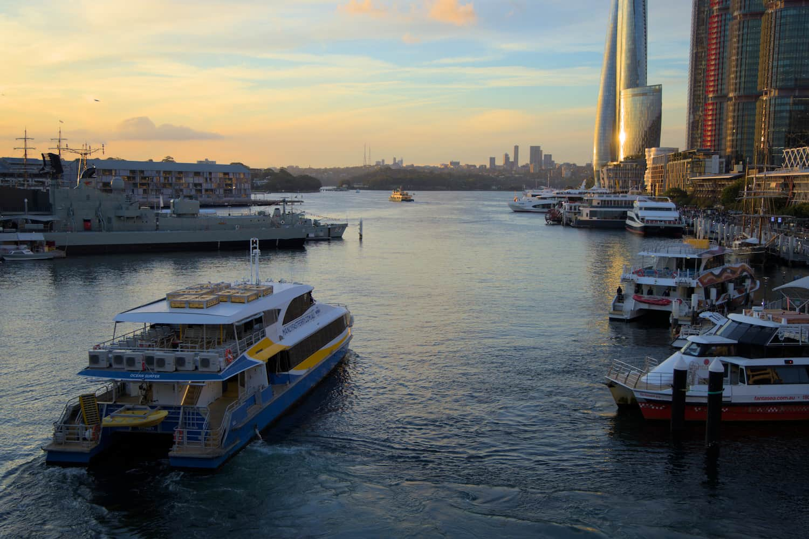
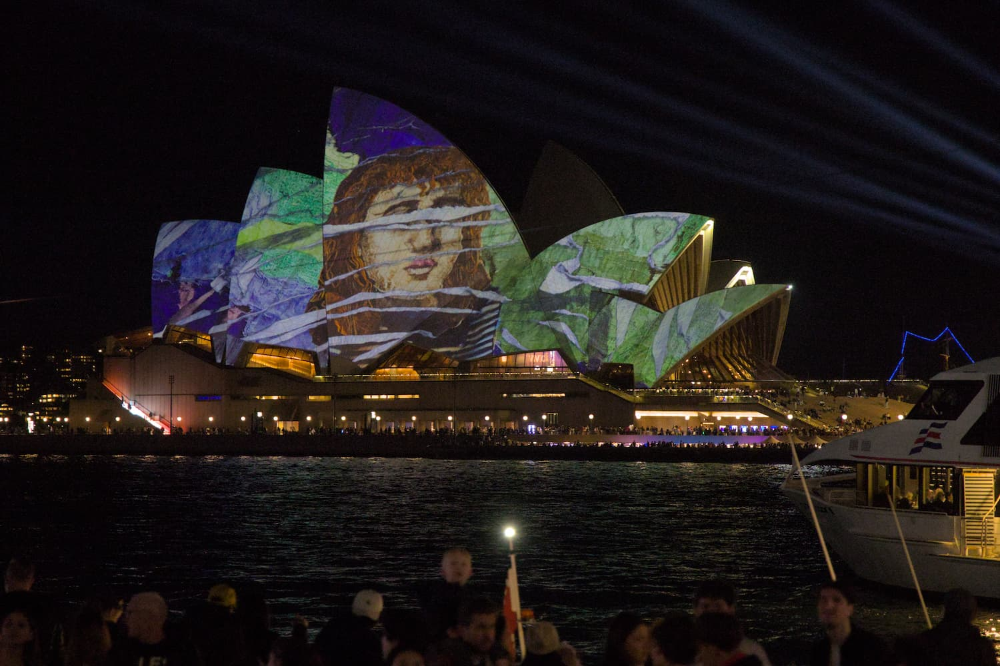
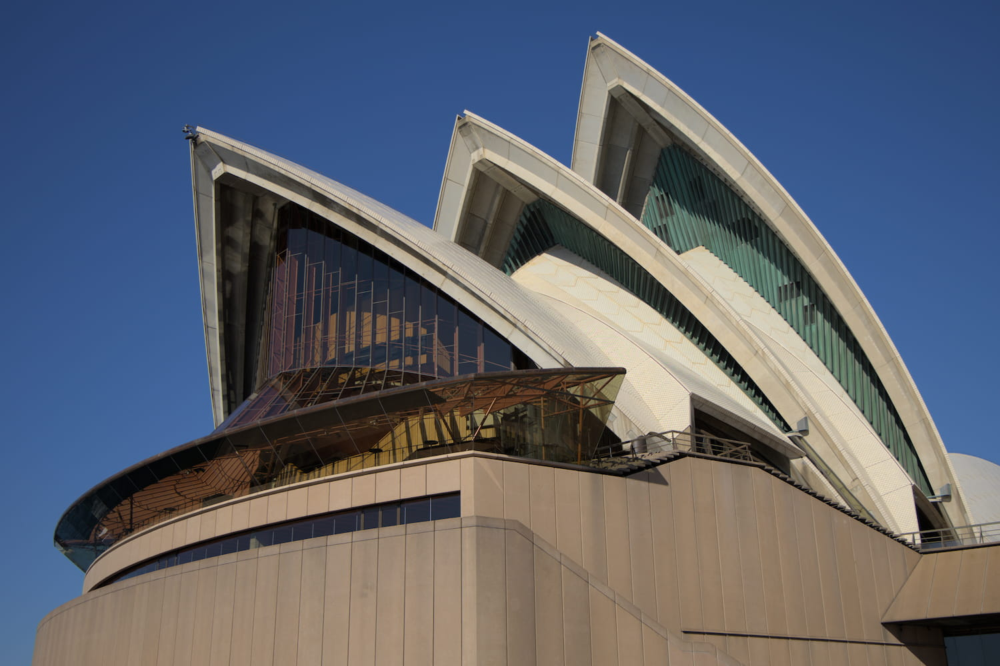
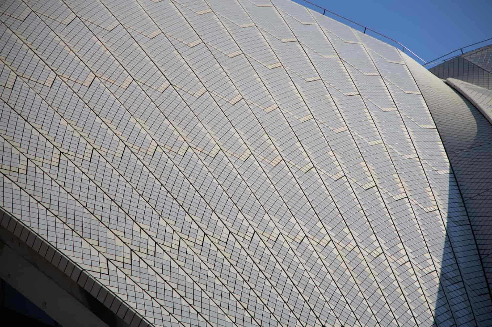
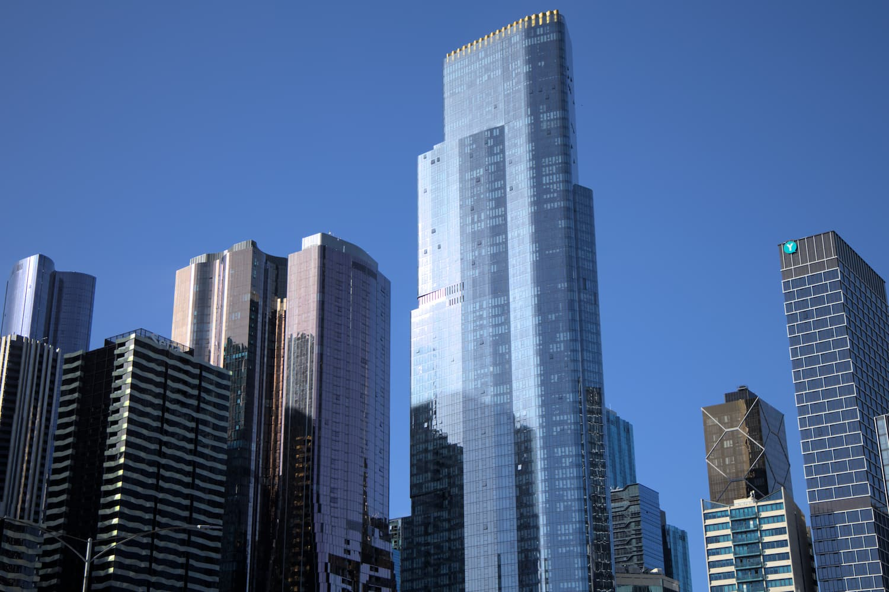
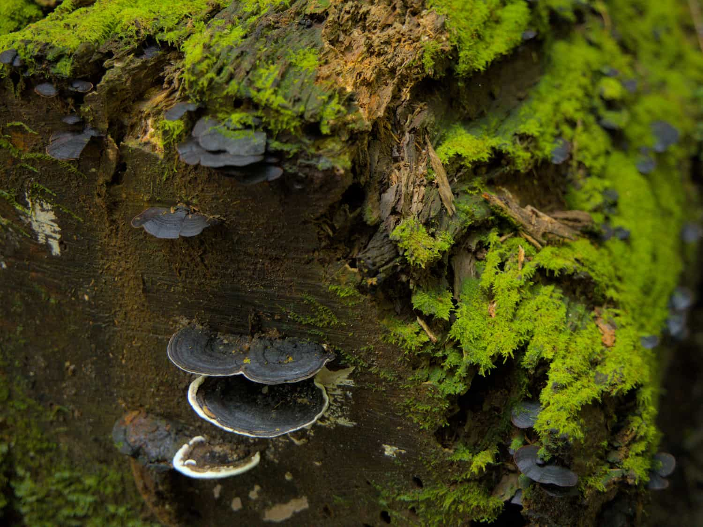
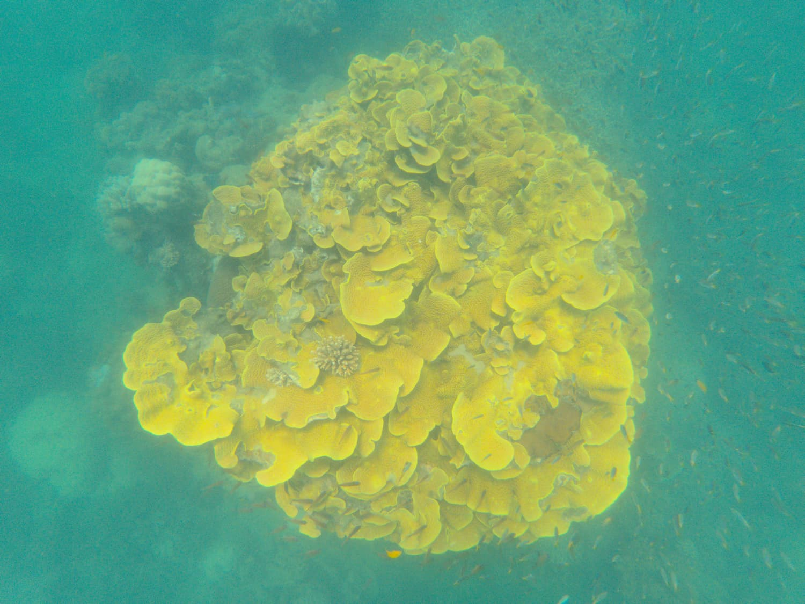
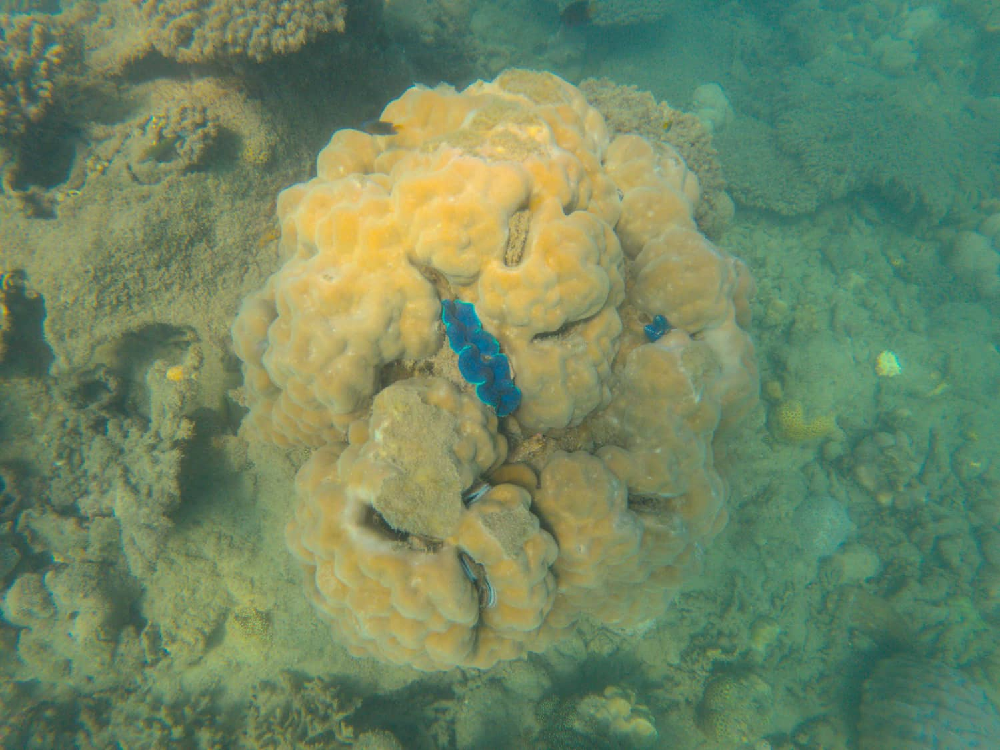
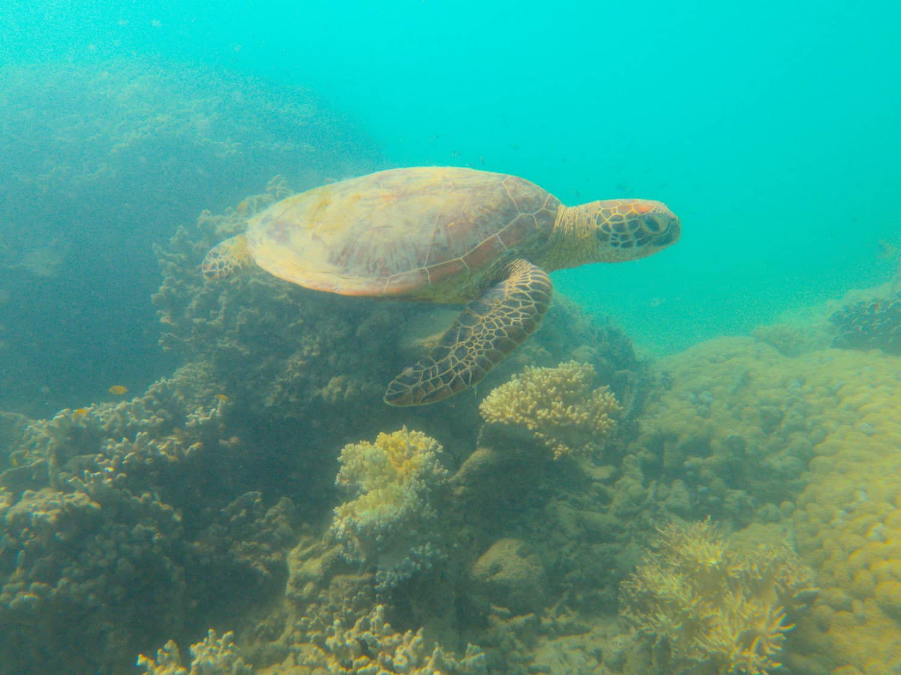
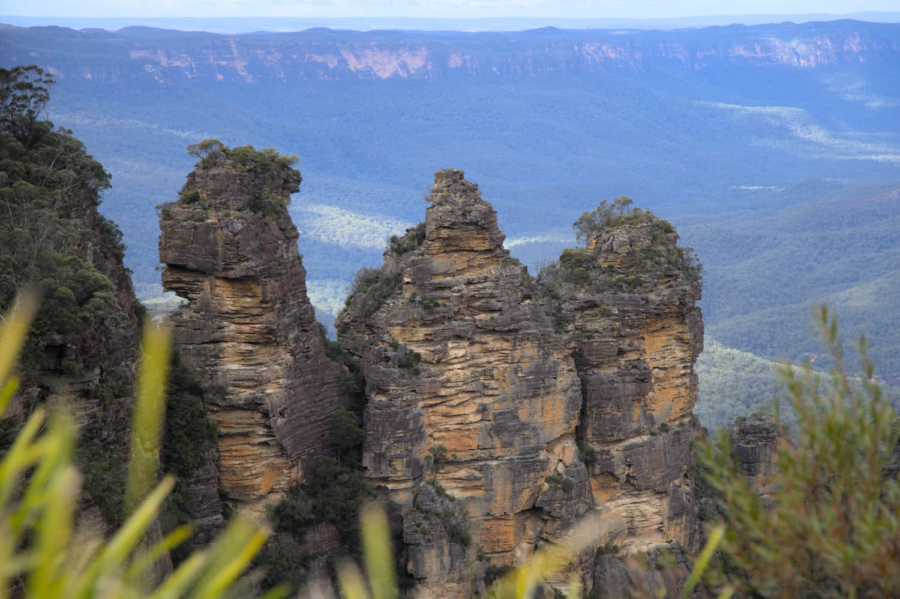

<!DOCTYPE html>
<html lang="en">
  <head>
    <meta charset="UTF-8" />
    <meta name="viewport" content="width=device-width, initial-scale=1.0" />
    <title>Nataniel Farzan | Index: 2</title>
    <meta name="description" content="Entry 2 of Nataniel's blog." />
    <link rel="stylesheet" type="text/css" href="../../assets/css/style.css" />
    <link rel="icon" type="image/png" href="../../assets/images/nf.png" />
  </head>
</html>

<body>
  <main>
    <section class="blog post">
      <h1>My Trip to Australia</h1>
      <h4>Jun. 20, 2024</h4>

      <p>
        I've just returned from vacation in Australia. I spent about three and a
        half weeks with my Dad exploring the country, and I thought it would be
        a good idea to document my experience here. We visited Sydney,
        Melbourne, and Port Douglas during our stay and we thoroughly enjoyed
        each city for different reasons.
      </p>

      <p>
        My journey started just three short days after finish my second year of
        college. I flew direct from Los Angeles, CA to Sydney, NSW on Qantas and
        met my Dad at the airport. We stayed in downtown, near the Queen
        Victoria Building (QVB). During our first day in Sydney, we explored the
        Chinatown area and bought some fresh fruits and vegetables. One of the
        first things that struck me about the city was the fact that modern
        highrises were built right next to old historical buildings. It's clear
        that Sydney is a very modern and active city, but it is also able to
        keep its history intact, which I found really interesting. Even though
        it was Winter in Australia, the weather in Sydney was quite nice. We
        took the ferry from Circular Quay to Manly Wharf and spent some time at
        Manly Beach.
      </p>

      <section class="portfolio">
        <h2>Darling Harbour</h2>
        
      </section>

      <p>
        We walked to The Rocks one evening to see Vivid Sydney, which is an art
        show where moving images are projected onto buildings surrounding
        Circular Quay, including the Sydney Opera House.
      </p>

      <section class="portfolio">
        <h2>Vivid Sydney</h2>
        
      </section>

      <p>
        The next day, we went to check out the Sydney Opera House, and I
        discovered that the roof of the building is made of small square and
        triangular tiles. The squares are white and the trinagles are slightly
        gold colored, giving the building a beautiful sheen in the sunlight.
      </p>

      <section class="portfolio">
        <h2>Sydney Opera House</h2>
        
        
      </section>

      <p>
        We then took the ferry to Watsons Bay and rode the bus to Bondi Beach,
        before returning back to the city. The day before we left, we took the
        train to Macquarie University and explored the campus. Throughout our
        time in Sydney, we were consistenly impressed with how clean the city
        was, as well as the convenience and efficiency of the public
        transportation system. Everything from the train to the bus to the ferry
        uses the same Opal card, and we never waited more than a couple minutes
        for our transportation to arrive.
      </p>

      <p>
        Our next stop on the trip was Melbourne, and we took a 12-hour train
        ride to get there. We got lattes from the famous Pellegrini's Espresso
        Bar and visited the Indigineous Galleries at The Ian Potter Centre: NGV
        Australia. We then walked around Queen Victoria Market, which had
        vendors that sold everything from fresh fruits and vegetables to
        clothing and jewelry to souvenirs. The next day, we explored the main
        National Gallery of Victoria (NGV) building, which featured a wide
        variety of paintings, sculptures, and artifacts from various regions and
        time periods. The sheer size of the gallery and the number of pieces on
        display was nothing short of amazing. Later that day, I took a trip to
        the Melbourne Zoo and saw kangaroos, dingoes, and wombats for the first
        time in real life. The weather in Melbourne was quite a bit colder and
        windier compared to Sydney, but thankfully we did not get any rain
        during our stay. We found the tram to be a pretty convenient form of
        transportation, and we mostly stuck to the center of the city where the
        tram is free for all travelers within a predefined boundary.
      </p>

      <section class="portfolio">
        <h2>Melbourne skyline</h2>
        
      </section>

      <p>
        My first time ever trying Vegemite was at breakfast in our Melbourne
        hotel. I'll admit that, at the time, I had hoped it would be my last
        time ever eating it too. However, over the course of our trip it grew on
        me and I eventually bought a jar to take back home.
      </p>

      <p>
        We then embarked on the next leg of our journey, flying from Melbourne
        to Cairns on Virgin Australia. As soon as we stepped out of the
        airplane, we notice the climate was very different than anything we had
        experienced on our trip thusfar. The air was warm and humid, feeling
        quite tropical. A friend picked us up from the airport and drove us
        about an hour north along the coast to her home in Port Douglas. One of
        the first places we visited was the Rainforest Habitat Wildlife
        Sanctuary, home to a variety of native species, including parrots,
        cassowaries, koalas, emus, crocodiles, snakes, and kangaroos. Many of
        the animals roam freely in the sanctuary (except for the crocodiles,
        thankfully), allowing visitors to get up close and personal with the
        animals. I even got to pet and feed a couple kangaroos! Later that day,
        we hiked around Mossman Gorge, a beautiful and lush rainforst just north
        of Port Douglas. We walked around The Australian Chocolate Farm and
        tried a few different types of chocolate. We often took walks down Four
        Mile Beach, which is a long, continuous stretch of beach along the Port
        Douglas coastline.
      </p>

      <section class="portfolio">
        <h2>Mossman Gorge</h2>
        
      </section>

      <p>
        My favorite outing of the entire vacation was our snorkeling trip to the
        Low Isles. The Low Isles are made up of Low Island, a coral cay that is
        home to a lighthouse and and a few researchers, and Woody Island, an
        uninhabited island covered in mangrove trees. We spent the day at the
        Low Isles with Sailaway Port Douglas, a company that operates fully
        electric sailing catamarans. We got to spend a couple hours snorkeling
        around the reef surrounding Low Island. I saw a lot of diverse
        underwater life while exploring the reef, including coral, fish,
        turtles, giant clams, and boring clams.
      </p>

      <section class="portfolio">
        <h2>Coral</h2>
        
      </section>

      <p>
        Like the name suggests, boring clams embed themselves in large masses of
        corals. These animals caught my eye because of their vibrant colors,
        which are only visible when their mantles are extended.
      </p>

      <section class="portfolio">
        <h2>Boring clam</h2>
        
        <h2>Sea turtle</h2>
        
      </section>

      <p>
        When it was finally time to leave Port Douglas, which quickly became our
        favorite part of the vacation, we flew back to Sydney with a quick
        layover in Brisbane. Instead of staying in downtown Sydney again, upon
        recommendation from an Australian friend, we decided to change our plans
        and get a hotel outside the city. We stayed two nights in the Blue
        Mountains area of New South Wales, which is about a two hours northwest
        of Sydney's Central station by train. The weather in Katoomba was quite
        cold and windy, much harsher than what we had grown accustomed to in
        Port Douglas. We took the bus to a lookout called Echo Point, which
        looks out onto Jamison Valley and the surrounding Blue Mountains. One of
        the most famous points of interest in the area is the Three Sisters rock
        formation. Formed by volcano eruptions millions of years ago, these
        three rocks have a particular importance to local Aboriginal tribes.
      </p>

      <section class="portfolio">
        <h2>Three Sisters</h2>
        
      </section>

      <p>
        My Dad and I had an amazing trip traveling around the country. We were
        impressed by both the modern and vibrant cities, as well as the amazing
        wildlife, biodiversity, and rich cultural history that Australia has to
        offer. I'm looking forward to my next trip Down Under.
      </p>
    </section>
  </main>
</body>
